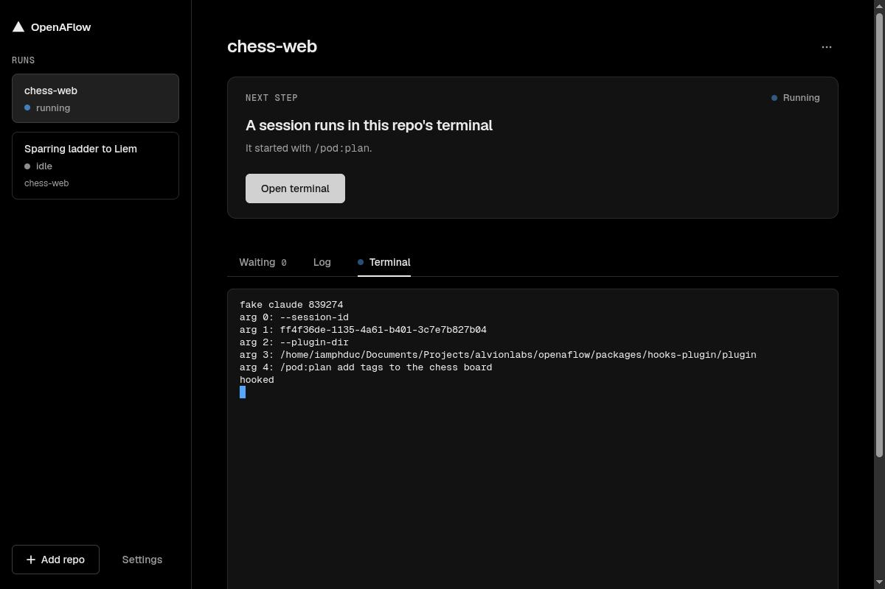
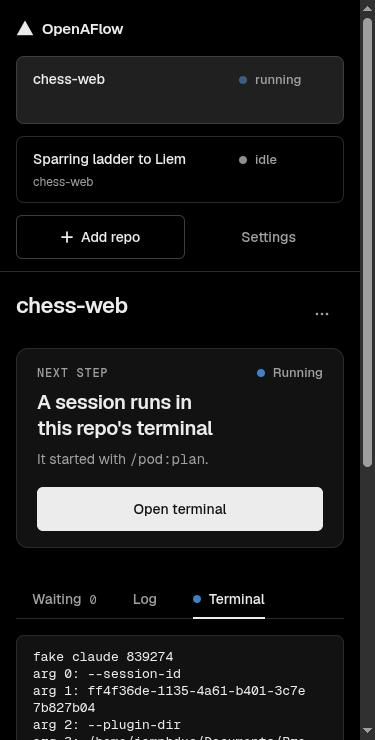
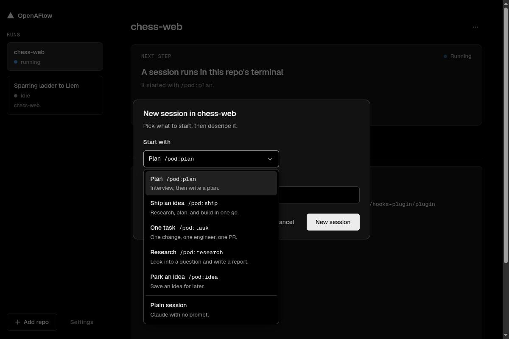
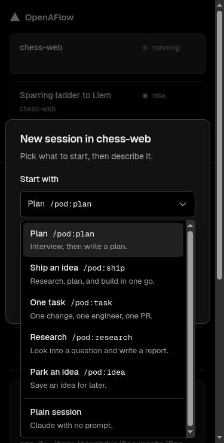
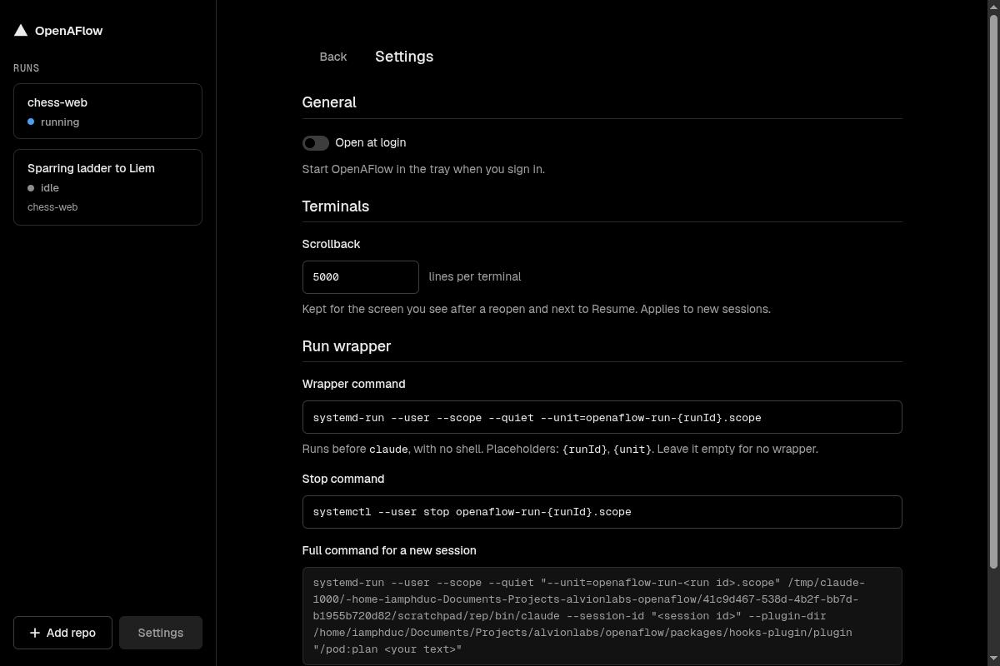
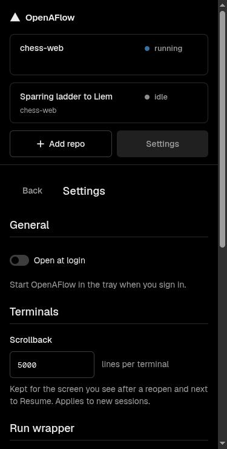

Terminal host
At a glance
Goal: OpenAFlow hosts its own terminals, so you start, watch, type into, resume, and end claude sessions in the app and use no separate terminal.
Shipped:
- New session: pick a pod skill, type a line, and the real
claudestarts in the repo. - A Terminal tab that survives a closed window, a server crash, and a host crash.
- A quit that asks first, then ends every session process; Resume after a restart.
- A settings page: Open at login, scrollback, and (Linux, macOS) the run wrapper and stop command.
- The desktop app now starts on Linux and ships as an AppImage beside the Windows installer.
Wall time is calendar time from the first to the last branch commit, nights included. Context is final size, not tokens billed.
PRs: 12 wave PRs, #152, #156, and the final #155; 25 closed CI-check drafts not counted. Slices leave out fix passes; context leaves out the reviewer and the #156 engineer.
Review: round 1 fix (two findings, fixed in #156). Round 2 fix (one finding: the PR body missed the #156 step; applied). No round has passed yet.
Look here first
packages/desktop/src/session-ender.ts,windows-jobs.ts,quit-flow.ts: a confirmed quit ends every process a session started, and a one-way door. The Windows job helper has never been run by hand, andreal-exitandreal-toastnever ran anywhere.packages/server/src/run-wrapper.tsandsettings-routes.ts: a setting now chooses a program the app runs, and a changed wrapper is run once aroundtrueas a check. The route is token-gated.packages/hooks-plugin/plugin/scripts/record.sh: it records every prompt and tool input. Round 1 found the file readable by other users; fixed, but a session already running at update time keeps its old 0644 file.packages/desktop/src/login-item.tsandlogin-autostart.ts: they rewrite your autostart entry at each AppImage start. The reviewer ran the repair on Linux; nobody ran Open at login on a real Windows machine.packages/server/src/session-routes.tsandsession-store.ts: a start that times out leaves its recordstartingand blocks that repo's New session. Remove repo while a session is live leaves it running with no row.
Key features
You can now do your whole claude work inside the desktop app, and the browser build only shows state.
| Feature | What changed | Shown by |
|---|---|---|
| New session | ⋯ menu → "Start with" list of five pod skills and Plain session, one text field | screenshots 2 |
| Terminal tab and Next step card | The repo row says "A session runs in this repo's terminal" with Open terminal; xterm shows the live session | screenshots 1 |
| Session life | Close and reopen keeps the screen; quit asks, then ends the tree; a stopped session shows its last screen with Resume and Dismiss | Results in Proof (no screenshot) |
| Settings | Open at login, Scrollback, wrapper, stop command, full-command preview | screenshots 3 |
| Linux app | The app starts on Linux; pnpm package makes an AppImage with latest-linux.yml | release:check passed with processes left: [] (reviewer) |
| Updates | An update installs only after the quit question | Packaged AppImage with a test feed (engineer); no screenshot |
1. Terminal tab


2. New session


3. Settings


Shots come from the desktop app on Linux with temp folders and a fake claude, dark theme. The 375 px shots are emulated. The stop bar, quit box, and host banner have no shot.
Proof
4 of 6 rows met, all on a fake claude; 2 were never checked, and no human drove the installed app on Windows.
| Criterion or feature | Result | Checked by | How |
|---|---|---|---|
Real claude, signed in: folder-trust prompt, Resume that brings the conversation back, tool hooks; the installed Windows app | not checked | nobody | The start argument ran with real claude once on Linux (host-core A1, real ~/.claude); the other real-claude tests wait for a signed-in test folder |
Quit rewrite on Windows (real-exit, real-toast) | not checked | nobody | Windows-only, not in CI, skipped on Linux |
/clear keeps the same run with the new session ID | met | engineer's tests | Unit tests on hook lines (hook-state, board-service); never with real claude |
Window close and reopen, server kill, host kill, app kill, Resume, quit leaves no claude or child | met | engineer's tests, reviewer | real-terminal, real-quit, real-resume with a fake claude; CI green on both systems; reviewer reran them on Linux |
| Settings change scrollback and wrapper; a broken wrapper stops the start with Open settings | met | engineer's tests, reviewer | real-settings and the reviewer's drive of the app |
| Linux AppImage starts; Linux and Windows CI run | met | reviewer | release:check; all four CI jobs green on the head after #156 |
Not checked by this report
- I did not rerun the test suite or CI. Results come from the sprint summaries, PR #155, and its two review comments.
- Round 2 did not rerun the
features.mdrows; round 1 ran them all. - The 12 wave PR bodies, and the sprint docs beyond their Sprint summary. Their proof notes are unread.
Risks and undo
Four one-way doors were declared, plus new data on disk; the reviewer found their reverts no longer apply clean, so each undo needs hand-merged conflicts.
| Risk | Undo |
|---|---|
Saved screens can hold secrets, kept in screens/ (0600)packages/pty-host/src/screen-file.ts, screen-route.ts | Revert S3 (git revert -m 1 9f5c5e5), then delete screens/; Dismiss deletes one session's screen |
Quit ends every session process; leftovers end at the next startpackages/desktop/src/session-ender.ts | Revert 982be2a aaeae2c, then -m 1 9eb9b14; ended processes stay ended |
Release workflow now builds and publishes an AppImage on a tag.github/workflows/release.yml | git revert -m 1 508a32f before the next tag |
Config folder copy keeps file timespackages/server/src/config-move.ts | git revert -m 1 3fa5f7d; a copy that already ran stays |
Hook file holds every prompt and tool inputrecord.sh | Dismiss deletes a session's hook file; running sessions from before the update keep 0644 until a new run |
New data and token-gated routes: sessions.json, the screen route, New session, Resume, Dismisssession-store.ts, session-routes.ts | Additive file: delete sessions.json to forget records; routes go with a revert of the terminal-tab waves |
A setting picks a program the app runs, and Open at login writes an autostart filesettings-routes.ts, login-item.ts | Reset to default, turn the switch off, or delete settings.json |
How it fits together, as built
The page asks the server, the server asks Electron's main process, and main asks the pty host; the window types into the host over a direct port.
flowchart LR A["TerminalTab.tsx"] -- "New session, Resume, Dismiss" --> B["session-routes.ts"] B -- "argv" --> C["session-command.ts"] B -- "wrapper plan" --> D["run-wrapper.ts"] B -- "records" --> E["session-store.ts"] E -- "hook state" --> K["hook-state.ts"] K -- "reads its file" --> L["record.sh"] B -- "start, list, sweep" --> F["terminal-channel.ts"] F -- "parentPort messages" --> G["terminal-relay.ts"] G -- "start, kill, list" --> H["pty-host-starter.ts"] H -- "protocol" --> I["pty-host service.ts"] A -- "MessagePort" --> I M["shell-main.ts"] -- "quit, leftovers" --> J["session-ender.ts"]
Differences from the plan
- The plan drew routes straight to main. As built, the server has
terminal-channel.tsoverparentPort, and main relays it. Only a server main started has it, sopnpm devandpnpm startanswer409 no terminal host. - New:
run-wrapper.tsruns a changed wrapper aroundtruebefore first use, so a broken wrapper shows a word on the page and not inside the terminal. - New:
windows-jobs.ts, a PowerShell and C# Job Object helper, and later fixes for children started before its first assign. - New:
screen-route.tsserves a session's saved screen, token required. - New from review: at each AppImage start,
repairLoginItempoints Open at login at the new file after an update.
Key decisions
The human made the five biggest calls; agents recorded 26 defaults on open details, and each has a decisions.md entry.
| Decision | By | Why | Instead of | Consequence |
|---|---|---|---|---|
| No release before the terminal host | human | Without it the app is only a monitor | Release after ui-rework | v0.1.0 waits for this plan and openaflow-plugin |
| Three plans in a row | human | Over the 4-sprint cap; one review for too much code | One plan | No automatic input yet: Continue opens the Terminal tab |
| Keep node-pty 1.2.0-beta.18, pinned | human | It runs VS Code's terminal; the human's Windows test passed | A fork or zigpty; fallback @lydell/node-pty | A beta in a packaged app; proved in CI only |
| New session uses a skill dropdown | human | Pick, not type | Typing the command, or writing it into the pty | The skill goes in the start argument; nothing is typed into a session |
| CI once per sprint | human | A wave is a piece, not a feature | CI on every wave PR | A Windows bug shows at sprint end |
| Ship Linux as an AppImage | agent | Any distro, no root, updatable in place | .deb, .rpm, Flatpak | Needs FUSE 2 on some distros |
| A session joins a run only by an agent's session ID | agent | Replaces the research's first transcript mention | Also join by the plan doc | A fresh /pod:plan stays on the repo row; unchecked on a real transcript |
A timed-out start keeps its record starting | agent | The contract says so | Mark it failed; drop the old record on a late started | That repo answers 409 session starting; a late Resume leaves two rows |
| SIGTERM with a live session asks the quit box | agent | Nothing may end without a yes | End sessions with no box | A failed box reads as Cancel, so the app cannot quit |
| Accept the Electron sandbox off on Ubuntu 24.04 AppImages | agent | AppRun adds --no-sandbox when unshare fails | Refuse the start and ask for an AppArmor profile | The sandbox is probably off there; docs/install.md says so |
| Remove repo while a session is live: keep as is | agent | Product choice, found by reading | Refuse, or end the session | It runs with no row, and counts toward the cap of 10 |
What's left
17 queue entries are open: 2 to fix next, 9 before hosting, 6 someday. Another agent was sorting the queue as I wrote, so counts may move.
Fix next
- Sign in once in a separate Claude Code folder so the real-
claudeproofs can run (human task). - Settings page: Try again after an API restart keeps the old token and shows the same error; only a reload helps.
Before hosting
- Windows checks by hand:
real-exit,real-toast, realclaudethrough theclaude.cmdshim, a session's background command at quit. - Linux checks with real
claude: the folder-trust prompt, and Resume after a host kill. - Two Windows job-helper gaps: a main crash before the first assign, and a grandchild whose parent ended first.
- A silent window port with 5,000 to 100,000 unacked characters keeps a session paused for good.
- A 512 px Linux icon, and an
actionlintpass on the release workflow's Linux build.
Someday
- Server reads the whole hook file on each change;
record.shchmod only at a run's first line. - Two AppImages at different paths: the last one started owns the autostart entry.
- Server SIGTERM just after "listening" skips a clean stop;
readShimexport;test:electronsubstring match.